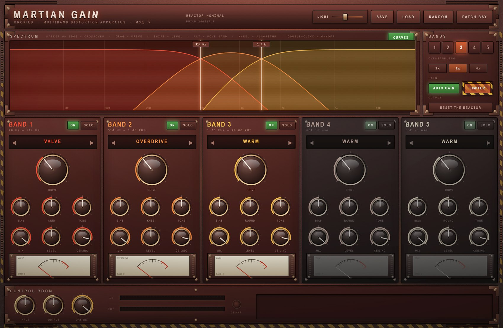
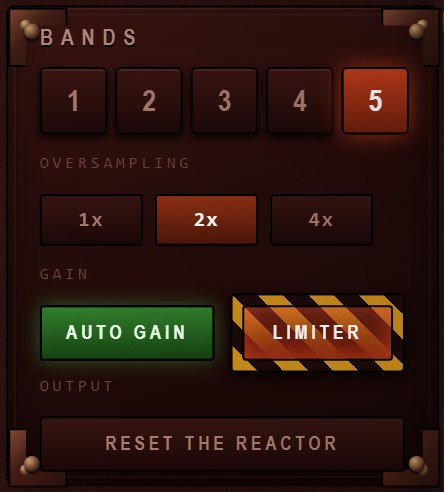
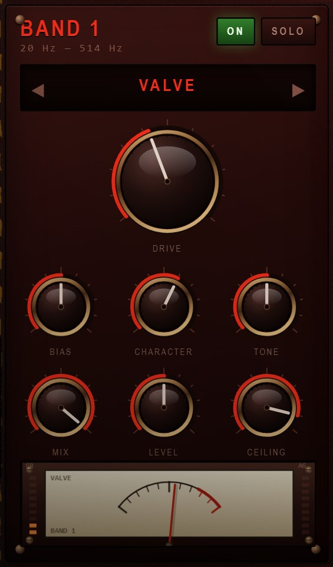
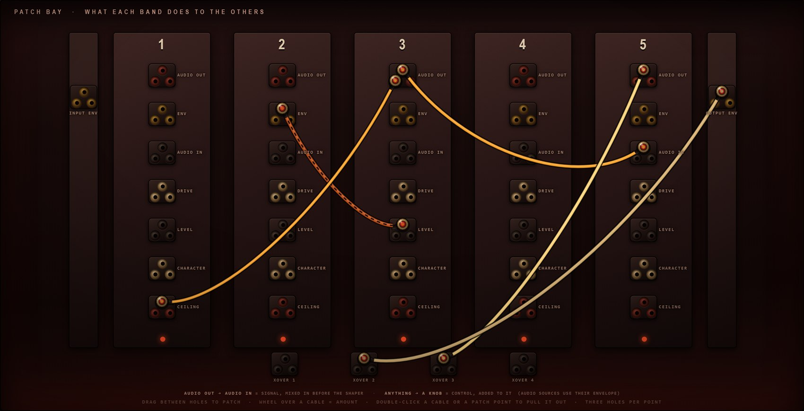

Five bands, sixteen ways to ruin them, and a gain match that keeps you honest.

User Manual
Quick start · Reference · Try this
Version 1.0
August 2026 · Windows VST3 · build 260827.2
01
What this is
Introduction
A multiband distortion. One to five bands, each running its own algorithm out of
sixteen, its own limiter and its own trim — and every one of them level-matched, so turning
DRIVE up changes what it sounds like without changing how loud it is.
That last part is the whole design. Distortion sells itself by getting louder: turn the knob,
it gets fatter, and the ear says yes before the brain has had a chance. Here every band measures
its own loudness either side of the shaper and corrects the difference, so an A/B is an honest
one. If it sounds better with the drive up, it is better.
The five things to know first
Bands are a button, not a mode
One to five, changed at any time. The crossovers
re-space themselves when you press a band-count button, and the machine fades through the
rebuild rather than clicking.
Every band is its own pedal
Algorithm, drive, bias, character, tone, mix, level
and a ceiling limiter — per band. Nothing is shared except the crossovers.
AUTO GAIN is on
And should stay on until you have a reason. Switch it off and
DRIVE becomes a volume knob again, which is occasionally what you want.
There is a limiter on every band
Plus a brick wall on the output. Sixteen
algorithms, five bands, and a fold that can multiply its own harmonics — something has to
hold the line.
The front panel comes off
Under it is a patch bay: eight cables, and every band's
audio and envelope on tap to drive any other band's knobs. Section 08.
It is an effect, not an instrument. Stereo in, stereo out, no MIDI. Put
it on a channel, a bus, or the whole mix.
02
Quick start
Five minutes
Put it on something with a full spectrum. A drum bus, a synth, a whole mix. Multiband
distortion on a single sine wave is a waste of four bands.
Watch the spectrum. The display is live, and each band's zone is tinted with that
band's colour. Drag the markers to put the crossovers where the interesting parts of your
material actually are.
Turn one band's DRIVE up. It will not get louder — that is the point. Listen for
what it does to the texture instead.
Change that band's algorithm. The arrows step through; clicking the window opens the
whole list of sixteen. Everything from WARM to ANNIHILATE, and they are in that order.
SOLO the band to hear what you are actually doing to it, then un-solo and listen to
it in place. The two are rarely the same decision.
Press RANDOM when you are stuck. It re-rolls every algorithm, drive and character —
and deliberately leaves your input, output, dry/wet and band trims alone, so it changes the
sound without changing the balance.
The spectrum and its crossover markers across the top, five band strips beneath,
the control room along the bottom.
LIGHT, at the left of the header, is for rooms this panel was not
designed for. It is a gamma curve rather than a brightness control: it lifts the shadows —
where everything on a panel this dark actually lives — and steepens the contrast down there,
while leaving the highlights where they are instead of flattening them into white. Double-click
the slider to put it back to nothing. It is a view setting, not part of the patch: it is
remembered per machine and never saved into a preset or a project.
03
Bands and crossovers
The spectrum
Each band's zone is tinted in its own colour, and the spectrum bars are coloured by
the band they fall into — so you can see which band is doing the work before you hear it.
The strip of small type along the top of the display is the whole set of shortcuts. The
spectrum is not a picture of the sound; it is the fastest way to drive the plugin.
Drag a marker — or the edge of a zone
Moves that
crossover. The readout on the marker follows in real frequency, and the two curves either
side of it move with it.
Double-click a marker
Back to its default.
Drag inside a zone
That band’s DRIVE. Up is more.
Shift-drag inside a zone
That band’s LEVEL.
Alt-drag inside a zone
Moves the whole band — both its crossovers together,
keeping its width.
Wheel over a zone
Steps that band’s algorithm.
Double-click inside a zone
That band on or off.
CURVES
The translucent filled response curves, one per band, showing what
each crossover is really doing to the signal rather than where a line has been drawn. On by
default; switch them off if you would rather watch the bare spectrum.
1 – 5
The band count. Pressing one of these also re-spaces the crossovers
evenly across the audio band, because a five-band layout squeezed into two bands is never what
anyone wanted. Automation from the host changes the count without re-spacing.

Band count, oversampling, and the two switches that decide how honest and how
safe the output is.
Under the crossovers
Fourth-order Linkwitz-Riley, with the all-pass compensation that
keeps the sum flat: every band split off early is run through an all-pass matching each later
split, or the crossovers start notching each other. Measured on the bench at every band
count, the summed response is flat to within 0.08 dB from 30 Hz to 14 kHz.
Crossovers cannot cross. Push one past its neighbour and it stops
a semitone short.
Oversampling
Shapers alias, and the mild ones suffer most — a tube emulation that folds its own harmonics
back down the spectrum does not sound like a tube. 2× is the default and costs little;
4× is for when the top band is doing something violent. 1× is there for when you
want the aliasing, which with BITCRUSH and DECIMATE you very well might.
The resampling is a 63-tap polyphase half-band pair; measured transparency in
the audio band is within 0.02 dB at both ratios.
04
A band strip
The controls

Every band is the same nine controls. Learn one strip and
you have learned all five.
The frequency range under the band number is live — it follows the crossovers, so you
always know what this strip is actually working on.
At the foot of the strip is a moving-coil meter showing the band's own level, with two LED
strips beside it: GR on the left is the band limiter working, AG on the right is
how much the gain match is adding or taking away.
Control
What it does
ON / SOLO
Bypass this band, or hear it alone. Solo on any band mutes the rest;
several bands can be soloed at once.
Algorithm window
Arrows step through the sixteen; clicking the window opens the
list. Section 05.
DRIVE
How hard the shaper is pushed. With AUTO GAIN on this changes the
character and not the level.
BIAS
Shifts the operating point of the shaper, which makes it lopsided — and a
lopsided shaper makes even harmonics. This works on all sixteen, so BIAS means the
same thing everywhere. The DC it leaves behind is removed automatically.
CHARACTER
A different control on every algorithm, and it is labelled with
whatever it currently is. See the table in section 05.
TONE
A ±12 dB tilt after the shaper, pivoting at 700 Hz. Dark at the bottom,
bright at the top, same loudness either way.
MIX
Dry and wet within this band. Parallel distortion per band, which
is the most useful control here after DRIVE.
LEVEL
The band's trim into the sum, −∞ to +12 dB. Unity is straight up.
CEILING
Where this band's limiter starts working, −34 dB to full scale. Pull it
down and the band compresses into itself; leave it up and it only catches peaks.
05
The sixteen algorithms
Reference
Roughly in order of how much damage they do. The first four flatter, the last four
do not pretend to.
Mild
Name
Character
What it is
WARM
ROUND
A cubic soft clip — the gentlest thing here. CHARACTER rounds it further toward a pure tanh curve.
VALVE
GRID
A triode: it conducts differently either side of zero, so it is lopsided even with BIAS centred. That asymmetry is where the second harmonic comes from, and why it flatters almost anything. CHARACTER sets the grid conduction.
OVERDRIVE
KNEE
A soft clip sliding toward a hard one. CHARACTER is the knee: soft at the bottom, abrupt at the top.
TAPE
DULL
Saturation with a memory — the shaper's own recent output is folded back in, which smears transients the way tape does. CHARACTER is how much of that memory you hear.
Harsh
FUZZ
SQUASH
A hard clip with a different threshold each way up. Cheap, nasty and honest about it. CHARACTER sets the positive threshold, so it decides how lopsided the squash is.
RAZOR
EDGE
Straight from tanh to a razor-hard clip. CHARACTER is that blend. The one to reach for when you want the edge and nothing else.
FOLD
OFFSET
A triangle wavefolder: past full scale the waveform turns back on itself instead of flattening, which multiplies harmonics rather than merely adding them. CHARACTER offsets the fold so it happens asymmetrically.
SINE FOLD
FOLDS
Folding through a sine instead of a triangle — smoother folds, far more inharmonic. Metallic and bell-like at high drive. CHARACTER is how many folds you get.
Digital
RECTIFY
OCTAVE
Blends the signal toward its own rectified self, which puts an octave up on top of it. CHARACTER is how far toward full rectification it goes.
BITCRUSH
DITHER
A quantiser, fifteen bits down to about one. CHARACTER adds dither, which turns the quantisation buzz into quantisation hiss.
DECIMATE
SMOOTH
Sample and hold, up to one sample in seventy-one. CHARACTER smooths the steps, from a hard staircase to something almost filtered.
SLEW
SKEW
A slew-rate limiter: the output can only move so fast, so anything quick gets rounded off into a ramp. CHARACTER makes it asymmetric — faster one way than the other — which is where the character lives.
Unreasonable
RING MOD
FREQ
Ring modulation inside the band, 12 Hz to 4 kHz. At the bottom of the range it is tremolo; at the top it is a completely different instrument. DRIVE is the depth.
CHEBYSHEV
HARMONIC
Not distortion so much as harmonic injection: Chebyshev polynomials add one specific partial at a time. CHARACTER slides the emphasis from the second up to the fifth.
SHRED
CHOKE
Hard saturation into a clip that tightens as DRIVE rises, then a gate underneath. CHARACTER is the choke — how much of the quiet part gets swallowed. Gated, spitting, and very loud-sounding without being loud.
ANNIHILATE
CHAOS
A fold, then a crush, then a clip, then a sine folded through the result. CHARACTER is how much of that last stage you get. There is no musical justification for this one.
BIAS works on all sixteen. It shifts the operating point before the
shaper, so every algorithm can be made asymmetric — and asymmetry is what produces even
harmonics. On the mild four it is the difference between clean and characterful; on the last four
it is mostly just further damage.
06
Why DRIVE is not a volume knob
Gain matching
Every band measures its own RMS immediately before the shaper and immediately
after it, and applies whatever correction makes those two match.
It is measured rather than modelled, so it works for all sixteen algorithms without a lookup
table — including the ones that change the crest factor completely, and including whatever BIAS
and CHARACTER are doing at the time. It holds where it is when the band goes quiet, so silence
cannot ramp the gain up to meet a noise floor.
Measured on the bench, sweeping DRIVE from nothing to maximum with pink noise, the output
level moves by:
Algorithm
Level change across the whole DRIVE range
WARM, VALVE, TAPE, DECIMATE
0.04 dB
BITCRUSH, SLEW, OVERDRIVE, RING MOD
0.06 – 0.08 dB
RAZOR, SINE FOLD, RECTIFY, FUZZ
0.10 – 0.19 dB
CHEBYSHEV, SHRED
0.27 dB
FOLD, ANNIHILATE
0.40 – 0.44 dB
Under half a decibel at the very worst, and under a fifth of one for most of them. That is
well inside the range where the ear is judging the sound rather than the volume.
Switch it off deliberately. With AUTO GAIN off, DRIVE behaves like every
other distortion you have ever used — the level rises with it. That is occasionally exactly what
a part needs, and it is one button.
The limiters
Each band has its own, set by CEILING, with a fast attack and a ninety-millisecond release.
Its gain reduction is the left-hand LED strip on that band's meter. Because it sits after
the gain match, pulling CEILING down turns the band into a compressor that the distortion feeds —
which on a drum bus is frequently the whole point.
After everything there is a brick wall on the output. It is on by default, behind a hazard
guard, and the CLAMP lamp in the control room lights when it is working. Some of the best
settings in this plugin live with that lamp lit.
07
Presets and randomising
Getting about
SAVE
An ordinary Save dialog, opened on your preset folder and already
suggesting a name. Save somewhere else and that becomes your preset folder from then on —
unless you were simply filing into one of its own sub-folders.
LOAD
The whole library as a menu, with sub-folders flying out sideways beside
the loose presets. BROWSE… at the foot reaches anywhere on disk; PRESET FOLDER…
moves the library.
RANDOM
Re-rolls the band count, the crossovers, and every algorithm, drive,
bias, character, tone, mix and ceiling. It deliberately does not touch input, output,
dry/wet or the band levels, so the balance you set survives the roll.
Presets live in Documents\Brokild patches\Martian Gain. Every Brokild plugin keeps
its own folder under the same roof, which means a library survives an update: earlier versions
kept presets beside the installed .vst3, where an installer can reach them. Anything
saved under the old scheme is copied across the first time this version runs, and the originals
are left exactly where they were. A preset is the sixty-one numbers and nothing else: plain JSON
you can read, diff, back up or send to somebody.
Your DAW project stores the same thing independently, so reopening a session
restores the plugin without touching the preset folder at all.
08
The patch bay
What each band does to the others
A multiband processor normally runs its bands in parallel and in silence: five
separate distortions that never learn of each other’s existence, summed at the end. That is
tidy, and it is why multiband distortion so often sounds like five things happening rather than
one. Under this panel is the answer to it.
Press PATCH BAY in the header and the front panel lifts off. Underneath is a column
per band, an outlet and an inlet for everything worth connecting, and eight cables. What you
wire is what one band does to another.

Five columns, one per band, with the input and output envelopes on the side rails
and the four crossover frequencies along the floor. Each patch point is a block of three holes.
A cable is coloured by the band it comes out of, and hangs thicker the harder it is turned
up.
What comes out
Nothing in this list has a knob on the front panel, and it is not supposed to. These are
taps — places to listen to what the machine is already doing — rather than
controls. An envelope is simply how loud something is at this instant, as a number: patch
one into a knob and the knob follows that loudness.
AUDIO OUTper band
That band’s distorted
signal, after its shaper and its ceiling. Patched into another band’s AUDIO IN it is real
audio; patched into a knob it is that signal’s envelope.
ENVper band
How loud that band is, right
now — a follower, not a signal. This is the useful one.
INPUT ENV / OUTPUT ENVthe side rails
The
envelope of the whole input, and of the whole output. The first is your material driving the
plugin; the second is a feedback path around the entire machine.
What goes in
AUDIO IN
Mixes a signal into that band before its shaper. This is how you
make one band distort another band’s output rather than the source.
DRIVE, LEVEL, CHARACTER, CEILING
Adds to that knob,
continuously. The knob on the panel stays where you left it; the cable moves the value the
engine actually uses.
XOVER 1 – 4
Moves a crossover frequency. A cable from a band’s
envelope to the crossover above it makes the band breathe wider as it works harder.
Wiring it
Drag jack to jack
Take hold of an outlet and carry the plug to an inlet. The
cord follows your hand and snaps home when you are near enough. Either direction works —
out to in, or in to out.
Wheel over a cable
The amount, from −100 % to +100 %. The cable thickens with
it, and goes hollow and dashed when it is negative — a cable that turns a knob down
as the source gets louder.
Double-click a cable
Pulls it out.
Double-click a jack
Pulls out everything plugged into it.
One plug per hole. Every patch point is a little block of three
holes, so three cables can leave or arrive at the same point — each in its own hole, and you
can count them. A fourth is refused, because there is nowhere to put it. Several cables arriving
at the same knob simply add up. Eight cables in all.
Three that are worth trying
Band 1 ENV → band 4 DRIVE, about −60 %
The top of the
spectrum backs off when the bass hits. Ducking, but per band and inside the distortion rather
than after it.
Band 3 AUDIO OUT → band 5 AUDIO IN, about +40 %
The top band
distorts the middle band’s output as well as its own share of the source. Harmonics of
harmonics; this is where it stops sounding like a multiband.
OUTPUT ENV → XOVER 3, about +50 %
The crossover walks
upward as the whole thing gets loud. Nothing is modulating anything obvious, and yet the
machine will not sit still.
Whether it can run away
Audio cables make loops, and a loop through five distortions with the gain up is the
definition of a feedback path. Three things stop it becoming one. Every audio cable is delayed by
a single sample, so a ring is a comb filter rather than an algebraic impossibility. Every band
ends in its own ceiling limiter, and the master limiter sits after all of them. And the auto gain
is measuring, not modelling — it hears the loop getting louder and takes it back down.
Bench: five audio cables wired in a ring across all five bands, every drive at
maximum, held for thirty seconds — peak 1.000, and 1.000 still after the input is cut. Two
hundred random patchings at random settings: peak 1.000, nothing unbounded, no failures.
The cables are parameters. Each of the eight is three of them — FROM,
TO and AMOUNT — so the host can automate a patching, and a preset carries the wiring along with
the knobs. RANDOM will throw in a couple of control cables, never an audio one; a random
audio ring is a howl, not a preset.
09
Try this
Recipes
Glue that is not compression
3 bands. All three VALVE, DRIVE 35, BIAS 58, MIX
100, CEILING right up. 2× oversampling.
On a mix bus: denser, no louder, and nothing is moving.
Low end you can feel on a phone
2 bands, crossover about 140 Hz. Band 1 RECTIFY, CHARACTER
70, MIX 40. Band 2 clean, DRIVE 0.
An octave up on the bass only, mixed underneath. The note survives small
speakers.
Drum bus with teeth
4 bands. Band 1 WARM 30, band 2 OVERDRIVE 55, band 3
FUZZ 45 with MIX 55, band 4 RAZOR 30. CEILING on band 3 down to
−9 dB.
The snare gets angry, the kick stays whole, the cymbals stay.
The tape that has been used too often
3 bands, all TAPE, DRIVE 60, CHARACTER 70 on the top
band and 20 on the bottom. TONE down a little on band 3.
Softened transients and a dulled top, without an EQ move in sight.
Bells out of anything
5 bands. Bands 3, 4 and 5 on SINE FOLD with DRIVE 70 and
different CHARACTER on each. MIX 45. 4× oversampling.
Inharmonic metal on the top three bands, the fundamental untouched.
Broken transmission
3 bands. Band 2 DECIMATE DRIVE 75 CHARACTER 10, band 3
BITCRUSH DRIVE 60. Oversampling 1× — you want the aliasing.
Radio from somewhere it should not be coming from.
The one that ate the mix
5 bands, all ANNIHILATE, DRIVE 90, CHAOS 70. Then bring
DRY/WET back to about 18 %.
Wet, it is unusable. At a fifth, it is a texture nothing else makes.
Just press it
RANDOM. Then again. Then adjust one crossover.
Because the levels do not move, you can do this while the track plays and
nobody has to touch the monitor knob.
10
Installing & specifications
Practical
Installing
Unzip. Copy Martian Gain.vst3 — the whole folder — into
C:\Program Files\Common Files\VST3\. A sub-folder such as
...\VST3\Brokild\ is fine; hosts look inside.
Rescan. Start your DAW and let it rescan plugins. It appears as an effect,
manufacturer Brokild.
Or just run it.Martian Gain.exe in the same zip is the standalone
version; it picks its audio device from its own options menu.
If the panel does not appear — the interface is drawn in a WebView2
surface, which every up-to-date Windows 10 and 11 already has. If yours does not, install the
free Microsoft Edge WebView2 Runtime and reopen the plugin. The audio keeps working with the
window shut either way.
Specifications
Format
VST3 effect, 64-bit Windows. Standalone included.
Bus
Stereo in, stereo out. Mono is supported. No MIDI.
Bands
1 – 5, fourth-order Linkwitz-Riley with all-pass compensation.
Algorithms
16 per band, independently chosen.
Oversampling
1× / 2× / 4×, 63-tap polyphase half-band.
Parameters
85, all host-automatable — 61 on the panel, 24 in the patch bay.
Sample rates
Any. Tested at 44.1, 48, 88.2 and 96 kHz against every oversampling ratio.
Latency
None reported; nothing in the signal path looks ahead. The oversampling
filters add a fixed group delay of a little over half a millisecond at 2×, which is not
compensated and does not need to be for an effect used in isolation.
CPU
Rises with band count and oversampling. Five bands at 4× is the expensive
corner; two bands at 2× is not.
Patch bay
8 cables, 12 sources, 28 destinations. One-sample delay on audio
paths; saved in presets and in the project.
Network
None. It does not open a socket, and there is nothing to allow through
a firewall.
Martian Gain — Brokild Apps. Build 260827.2, August 2026.
Native C++ audio, JUCE 8, interface drawn in the plugin's own window.
Free to use. No installer, no account, no telemetry, nothing phones home.